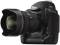

器材库 > 35mm画幅可换镜头数码相机 > D3x

规格总览
产品类型
35mm画幅可换镜头数码相机
发布日期
2008-12-01
厂家推荐价格
55,000.00 （人民币）
影像规格
影像传感器
CMOS
影像传感器尺寸
35.9 x 24.0mm
总像素
2572万
有效像素
2450万
影像处理器
EXPEED
色彩滤镜
RGB原色彩色滤镜
低通滤镜
感应器件前面，不可移动
最大解像度
6048 x 4032
静态图像尺寸
FX 格式 (36 x 24): 6048 x 4032 [L], 4544 x 3024 [M], 3024 x 2016 [S] DX 格式 (24 x 16): 3968 x 2640 [L], 2976 x 1976 [M], 1984 x 1320 [S] 5:4 (30 x 24): 5056 x 4032 [L], 3792 x 3024 [M], 2528 x 2016 [S]
静态图像质量
NEF (压缩 12/14 无损压缩, 压缩, RAW), TIFF (RGB), JPEG(基线-兼容)
镜头和对焦
镜头卡口
Nikon F
兼容镜头
1)AF Nikkor (包括AF-S、DX、 VR、D/G)；2)D-型MF Nikkor：AF和部分曝光模式无法使用；3)非D/G型AF 和 AI-P Nikkor：AF(仅AI-P)、3D彩色矩阵测光和3D多区平衡填充闪光控制无法使用；5)Non-CPU AI Nikkor：可在[A]和[M]模式下使用矩阵测光、CW测光和点测光。
对焦系统类型
TTL Multi-CAM 3500
对焦点
51个对焦点 (15 个十字型感应器)
对焦模式
1) 单次伺服 AF (AF-S), 2) 连续伺服 AF (AF-C), 3) 根据对象状态自动激活对焦追踪, 4) 电子测距仪手动对焦 (M) 单个AF对焦点可从 51 个对焦点中选择
AF辅助灯/光
有
手动对焦
支持
曝光控制
测光模式
中央重点测光, 评价测光, 点测光
测光范围
矩阵测光或中央重点测光：0-20EV~点测光：2-20EV
快门类型
电子控制，纵走式，焦平面快门
快门速度
1/8000 - 30秒，B门；闪光同步速度：1/250秒
曝光补偿
±5EV以1/3、1/2 或 1EV级调整
自动曝光锁
有
自动包围曝光
2～9张, 增量为 1/3、1/2、2/3 或 1 EV
连拍
FX 约5张/秒
闪光灯
闪光同步模式
前帘同步, 后帘同步
外接闪光灯
适用于 SB系列
取景器/显示屏
取景器
眼平五棱取景器, 固定
取景范围
100%
取景放大倍率
0.7倍
屈光度调节范围
-3.0 ~ +1.0
反光镜
快速瞬回半透明
反光镜锁定
有
LCD类型
低温多晶硅TFT LCD
LCD尺寸
3.0英寸
LCD像素
92万
Live View
有
Live View 对焦模式
手持模式、三脚架模式
文件输入/输出
存储卡
CF
数据接口
USB2.0
视频/音频接口
HDMI 输出, Video 输出 (NTSC/PAL)
支持打印协议
PictBridge, DPOF
电源
电池
一块可充电锂电池 EN-EL4a/EL4
续航能力
约 4400 张
外接电源
AC 适配器 EH-6（另购）
机身规格
材质
镁合金机身
颜色
黑色
尺寸
159.5 × 157 × 87.5mm
重量
1220g
其它
支持语言
中文（简体）, 中文（繁体）, 英语, 日语, 荷兰语, 芬兰语, 法语, 德语, 意大利语, 韩语, 波兰语, 葡萄牙语, 俄语, 西班牙语, 瑞典语
附件
可充电锂离子电池 EN-EL4a、快速充电器 MH-22、USB 线 UC-E4、AV 线 EG-D2、相机带 AN-D3、机身盖 BF-1A、配件热靴盖 Cap BS-2、目镜 DK-17、电池盖 BL-4、USB 线、Software Suite 安装 CD-ROM 光盘
备注
3D 彩色矩阵测光系统 II ( G 和 D 型镜头); 彩色矩阵测光 II (其它类型 CPU 镜头); 彩色矩阵测光 (若用户提供镜头数据, 则是非 CPU 镜头)；内置GPS功能；各种连接部件进行严格密封，可有效防尘防潮。
匿名网友2018-12-21 09:385 分
操作性 5.00功能性 5.00美观性 5.00趣味性 5.00耐用性 5.00性价比 5.00解像力 5.00色彩还原 5.00
匿名网友2017-11-23 09:384.81 分
操作性 5.00功能性 4.50美观性 5.00趣味性 5.00耐用性 5.00性价比 4.00解像力 5.00色彩还原 5.00
筆落2017-06-27 12:144.81 分
操作性 5.00功能性 5.00美观性 5.00趣味性 4.50耐用性 5.00性价比 4.00解像力 5.00色彩还原 5.00
阿番2017-04-09 21:414.81 分
操作性 5.00功能性 4.50美观性 5.00趣味性 4.50耐用性 5.00性价比 4.50解像力 5.00色彩还原 5.00
兰青2017-03-09 22:014.88 分
操作性 5.00功能性 5.00美观性 5.00趣味性 4.50耐用性 5.00性价比 4.50解像力 5.00色彩还原 5.00
东方哈玛斯2016-06-01 15:324.63 分
操作性 5.00功能性 4.50美观性 5.00趣味性 5.00耐用性 5.00性价比 4.00解像力 4.50色彩还原 4.00
807110842015-08-02 14:295 分
操作性 5.00功能性 5.00美观性 5.00趣味性 5.00耐用性 5.00性价比 5.00解像力 5.00色彩还原 5.00
莫桑比亚2015-04-09 23:484.88 分
操作性 5.00功能性 5.00美观性 5.00趣味性 4.50耐用性 5.00性价比 4.50解像力 5.00色彩还原 5.00
丛林日记20082014-11-14 15:564.94 分
操作性 5.00功能性 5.00美观性 5.00趣味性 5.00耐用性 5.00性价比 4.50解像力 5.00色彩还原 5.00
AFS2014-02-16 20:094.5 分
操作性 4.50功能性 4.50美观性 5.00趣味性 4.50耐用性 5.00性价比 3.50解像力 4.50色彩还原 4.50
Pantrol2013-07-14 23:554.63 分
操作性 5.00功能性 4.50美观性 5.00趣味性 4.50耐用性 5.00性价比 3.50解像力 4.50色彩还原 5.00
sunxun272013-01-22 10:214.94 分
操作性 5.00功能性 5.00美观性 5.00趣味性 5.00耐用性 5.00性价比 4.50解像力 5.00色彩还原 5.00
堂堂正正2013-01-09 21:325 分
操作性 5.00功能性 5.00美观性 5.00趣味性 5.00耐用性 5.00性价比 5.00解像力 5.00色彩还原 5.00
xuliangshey2012-07-07 17:214.69 分
操作性 5.00功能性 5.00美观性 5.00趣味性 4.50耐用性 5.00性价比 4.00解像力 5.00色彩还原 4.00
ais2012-04-23 21:214.94 分
操作性 5.00功能性 5.00美观性 5.00趣味性 5.00耐用性 5.00性价比 4.50解像力 5.00色彩还原 5.00
枫林小路2011-11-18 04:52
lzzq2011-07-31 20:484.88 分
操作性 5.00功能性 5.00美观性 5.00趣味性 5.00耐用性 5.00性价比 4.00解像力 5.00色彩还原 5.00
sxm2011-07-23 18:224.5 分
操作性 4.50功能性 4.50美观性 5.00趣味性 3.00耐用性 5.00性价比 4.50解像力 5.00色彩还原 4.50
bigthree2011-06-11 11:35
舜耕2011-05-14 17:364.75 分
操作性 5.00功能性 5.00美观性 5.00趣味性 5.00耐用性 5.00性价比 3.00解像力 5.00色彩还原 5.00
panpan05042011-02-25 06:114.81 分
操作性 5.00功能性 5.00美观性 5.00趣味性 4.50耐用性 5.00性价比 4.00解像力 5.00色彩还原 5.00
tlx662010-03-16 01:014.88 分
操作性 5.00功能性 5.00美观性 5.00趣味性 5.00耐用性 5.00性价比 4.00解像力 5.00色彩还原 5.00
34615022010-02-18 16:185 分
操作性 5.00功能性 5.00美观性 5.00趣味性 5.00耐用性 5.00性价比 5.00解像力 5.00色彩还原 5.00
长发飘飘2010-02-09 09:194.56 分
操作性 4.50功能性 5.00美观性 5.00趣味性 4.00耐用性 5.00性价比 3.00解像力 5.00色彩还原 5.00
liusm12342010-01-07 08:32
liusm12342010-01-06 17:214.75 分
操作性 5.00功能性 5.00美观性 5.00趣味性 5.00耐用性 4.50性价比 3.50解像力 5.00色彩还原 5.00
东航船长2010-01-05 22:114.94 分
操作性 5.00功能性 5.00美观性 5.00趣味性 5.00耐用性 5.00性价比 4.50解像力 5.00色彩还原 5.00
莞蓝星2009-12-23 01:21
莞蓝星2009-12-23 01:094.69 分
操作性 5.00功能性 5.00美观性 4.50趣味性 4.50耐用性 5.00性价比 4.00解像力 5.00色彩还原 4.50
peipei4903062009-12-22 21:464.88 分
操作性 5.00功能性 5.00美观性 5.00趣味性 4.50耐用性 5.00性价比 4.50解像力 5.00色彩还原 5.00
vtybinpnj2009-11-13 01:464.75 分
操作性 5.00功能性 5.00美观性 4.00趣味性 5.00耐用性 5.00性价比 4.50解像力 5.00色彩还原 4.50
AthlonFX2009-11-04 00:104.94 分
操作性 5.00功能性 5.00美观性 5.00趣味性 5.00耐用性 5.00性价比 4.50解像力 5.00色彩还原 5.00
若农2009-10-28 21:274.81 分
操作性 5.00功能性 5.00美观性 5.00趣味性 5.00耐用性 5.00性价比 4.50解像力 4.50色彩还原 4.50
素石2009-10-23 10:044.56 分
操作性 5.00功能性 4.50美观性 4.50趣味性 4.50耐用性 5.00性价比 3.50解像力 4.50色彩还原 5.00
李淑昌2009-10-22 22:014.25 分
操作性 4.00功能性 5.00美观性 3.50趣味性 5.00耐用性 5.00性价比 2.50解像力 5.00色彩还原 4.00
深眼2009-10-22 21:235 分
操作性 5.00功能性 5.00美观性 5.00趣味性 5.00耐用性 5.00性价比 5.00解像力 5.00色彩还原 5.00
nyp1272009-10-22 19:494.94 分
操作性 5.00功能性 5.00美观性 5.00趣味性 5.00耐用性 5.00性价比 4.50解像力 5.00色彩还原 5.00
malcolm2009-10-22 17:555 分
操作性 5.00功能性 5.00美观性 5.00趣味性 5.00耐用性 5.00性价比 5.00解像力 5.00色彩还原 5.00
想要云游四方2009-09-22 16:514.69 分
操作性 5.00功能性 4.50美观性 5.00趣味性 4.50耐用性 4.50性价比 4.00解像力 5.00色彩还原 5.00
关兼常2009-09-20 00:094.81 分
操作性 5.00功能性 5.00美观性 5.00趣味性 5.00耐用性 5.00性价比 3.50解像力 5.00色彩还原 5.00
一铭2009-08-02 14:424.81 分
操作性 5.00功能性 5.00美观性 5.00趣味性 5.00耐用性 5.00性价比 3.50解像力 5.00色彩还原 5.00
产品图 / 样片
D3x-06
评测 / 相关文章
- 详细内容 （存档）
- D3x与a900感光度比较 （存档）
- ［资讯］尼康数码单反汇总 － 截至2013年5月 （存档）
- ［资讯］尼康公布D3/D3X/D3S/D7000的最新固件 （存档）
- ［资讯］全面解读 尼康D7000视听手册上线 （存档）
- ［资讯］Aquatica两款防水外壳发布 （存档）
- ［资讯］尼康顶级影像器材再上太空 （存档）
- ［资讯］尼康D3x以及佳能5D2专用保护壳出炉 （存档）
- ［资讯］尼康D3x最新固件Ver.1.01 （存档）
- ［资讯］珠联璧合 尼康D3X+50/1.4G （存档）
相关文章
- ［资讯］尼康数码单反汇总 － 截至2013年5月 （存档）
- ［资讯］尼康公布D3/D3X/D3S/D7000的最新固件 （存档）
- ［资讯］全面解读 尼康D7000视听手册上线 （存档）
- ［资讯］Aquatica两款防水外壳发布 （存档）
- ［资讯］尼康顶级影像器材再上太空 （存档）
- ［资讯］尼康D3x以及佳能5D2专用保护壳出炉 （存档）
- ［资讯］尼康D3x最新固件Ver.1.01 （存档）
- ［资讯］D3X试机片 （原站已下线）
- ［资讯］你身边的专业影棚 尼康D3X亲密接触 （原站已下线）
- ［资讯］珠联璧合 尼康D3X+50/1.4G （存档）